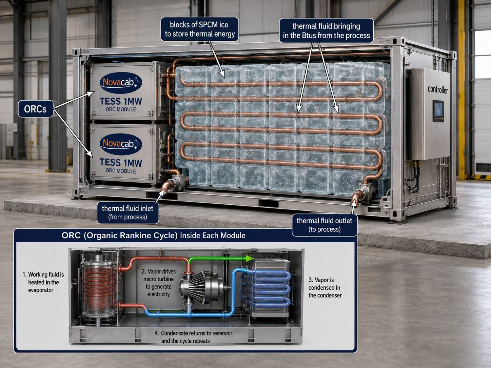

The short answer
Yes. For heat that is too cool to raise steam, the standard tool is an Organic Rankine Cycle (ORC) turbine. It works like a steam turbine, but uses a fluid that boils at a much lower temperature than water. Expect efficiency to climb with temperature: a few percent from warm water, roughly 10–16 percent from heat in the 150–250°C range.
How an ORC works
A conventional power plant boils water into steam, spins a turbine, condenses the steam and pumps it back around. An ORC does the same thing with a different working fluid, an organic compound such as a refrigerant or hydrocarbon that boils at a far lower temperature.
- Evaporator. Waste heat boils the working fluid into a high-pressure vapour.
- Turbine or expander. The vapour expands through it and spins a generator.
- Condenser. The vapour is cooled back to liquid, usually by cooling water or air.
- Pump. The liquid is pumped back to the evaporator, and the loop repeats.
It is a closed loop. The working fluid never touches the flue gas or process stream, and ORC units run with little supervision.
What efficiency to honestly expect
Every heat engine is limited by the gap between its hot side and its cold side. The smaller the gap, the less work you can get out. That is physics, not a design flaw, and it is why low-grade heat makes low-efficiency power.
| Heat source temperature | Typical result from published studies |
|---|---|
| 60–100°C (140–212°F) | A few percent. One compact prototype reached about 4%. |
| 150–250°C (300–480°F) | Roughly 10–16% thermal efficiency |
| Above about 370°C (700°F) | A steam Rankine cycle usually becomes the better choice |
For comparison, large steam power plants run around 25–40 percent. Anyone quoting high efficiency from warm water should show their numbers.
Heat first, power second
Here is the part that often gets skipped. If there is a direct use for the heat, such as process water, space heating, drying or a greenhouse, using it as heat is usually worth more than turning it into electricity, because nearly all of it gets used instead of 10 percent.
So the right order is: recover the heat, use what you can directly, and convert the remainder, especially the hottest remainder, into power. That is the logic of the Sidel CREN platform: the SRU and RPC recover heat, TESS stores it, and the ORC stage turns what's left into behind-the-meter electricity.

Why storage makes ORC better
ORC turbines like a steady, hot supply. Real waste heat is often neither: it rises and falls with production, batches and shifts. Thermal storage evens that out. Novacab TESS stores heat from about 50°C (122°F) up past 427°C (800°F), so heat can be collected whenever it is available and the turbine can run at its best operating point, or when power is worth the most.
When waste-heat-to-power makes sense
- The heat is hot, ideally well above 100°C, and available for many hours a year.
- There is no better direct use for the heat on or near the site.
- Electricity is expensive, or demand charges are high.
- The site needs resilient, behind-the-meter power. See the micro grid concept.
Show me the numbers
Power output depends entirely on your heat source's temperature, flow and hours. Sidel CREN doesn't quote output before a metered baseline. Here's how a project starts.
Quick answers
Can waste heat be converted into electricity?
Yes. The most common way to turn low and medium-temperature waste heat into electricity is an Organic Rankine Cycle (ORC), which works like a steam turbine but uses an organic fluid that boils at a much lower temperature than water.
How efficient is an ORC system?
Efficiency rises with the temperature of the heat source. Published studies report only a few percent for sources around 60 to 100 degrees C, and roughly 10 to 16 percent for sources in the 150 to 250 degrees C range. Above roughly 370 degrees C, a conventional steam cycle is usually the better choice.
Is it better to use waste heat for heating or for electricity?
If there is a direct use for the heat, such as process water, space heating or drying, using it as heat is usually worth more because almost all of it is put to work. Converting heat to electricity makes the most sense for high-temperature heat, or for heat that has no direct use nearby.